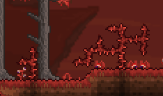

Aether
redeems the failed portals of past, despite being underground and obscure, the opposite of the REAL
aether.
At least this one is able to be found without ruining the hopes and dreams of millions who use console.
#2
Crimson

50% of the terraria community will hate me for this, but I follow the idea that Crimson is better than
corruption in most facets, with the only inferiorities being music and #3
Space

The enemies here are few, but important, Harpies provide harpy feathers, obviously, but also the giant
harpy
feather, which, when combined with 20 souls of flight (like all crafted wings besides maybe a couple)
make
Harpy wings, which are good early hardmode wings, for pre-mech activities. Plus the islands found here
have
excellent loot, from the chests, but the damselfish is a great source of income, with fishing in the sky
pools being convienent pre-hardmode for money, and safe, with the wyvern not spawning yet. Still worse
in
comparison to SEVERAL other biomes though. #10
Desert

This place sucks to go through, sandstorms are a nusiance. UNDERGROUND DESERT IS PAIN. The Biome chest
item
is mid as heck unless ur doing summoner playthrough. Rolling cacti is my sleep paralysis demon #14